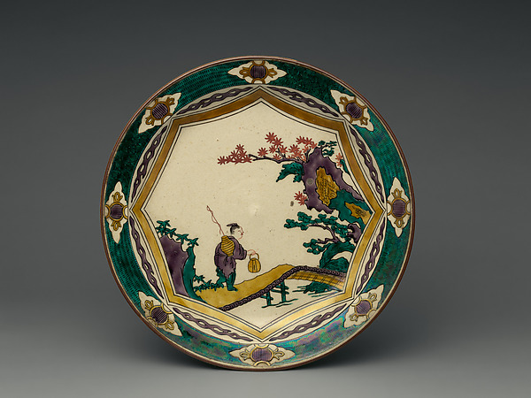

CERAMICS / KUTANI
Nomi, Kanazawa, Komatsu and Kaga, Ishikawa
Kutani: A Little Color, a New Conversation
Colorful ceramics need not wait for a celebration. Add a painted cup to a table of plain white plates and an ordinary tea break can feel different. A single object is enough to begin exploring Kutani's relationship with pictures and color.

01 / LOOK CLOSER
Begin with your own senses
Notice where the picture sits. Decoration outside a cup faces the room; a design inside a bowl may emerge as you finish eating. Imagine the object filled, not only empty, and consider when you want its picture to become visible.
02 / MAKERS TODAY
上出長右衛門窯 / Kamide Choemon Kiln
Kamide Choemon's Fuefuki series includes a teacup whose figure rides a skateboard—a playful meeting of painted porcelain and a familiar pastime. The official collections also have a Keigo Kamide design category, offering a way to explore individual expression within the kiln's wider practice.
Explore official works and profile ↗03 / AT YOUR TABLE
Three ideas for your table
The following are KOTO editorial suggestions.
Weekday coffee
Pair one painted cup with a white side plate and a plain coaster.
A shared snack
Pick one color from the picture for your napkins instead of repeating the whole pattern.
Dinner accents
Use a small decorated dish for pickles or an appetizer, keeping your existing main plates.
Before you choose
Begin with a cup of useful capacity or a small dish. Follow the product's microwave and dishwasher instructions, especially for decorated or gilded surfaces. The photographed nineteenth-century dish is a historical example, not a current product from the featured kiln.
04 / EXPLORE THE REGION
Connect with the region
The Kutani industry federation links the broader region with organizations and exhibition news. Follow a favorite pattern to the kiln's own sales information, and check access separately: a working studio and a shop do not necessarily welcome visitors on the same terms.
石川県九谷陶磁器商工業協同組合連合会 / Kutani industry federation ↗Regional background and sources
Rich overglaze decoration is one way into Kutani ware. Its well-known palette includes green, yellow, red, purple and deep blue, used in varied combinations and styles. Try looking at a vessel as you would a small painting.
Maker and regional information was checked against the linked official sources on November 8, 2026. Looking and table-setting ideas are editorial commentary, not interviews or maker endorsements. Consult current official guidance for visits and product specifications.